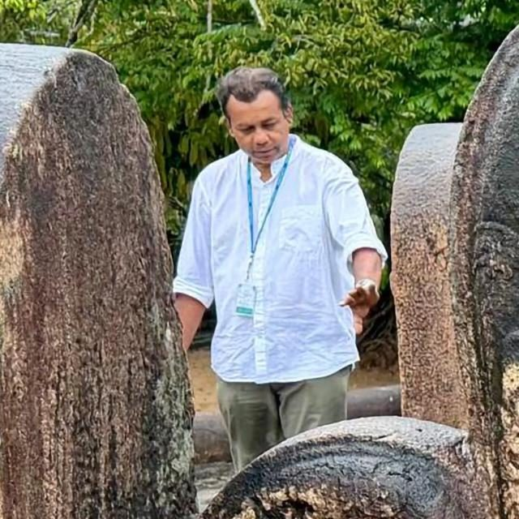

Explore Sri Lanka with a licensed national tourist guide and Lecturer who arranges the whole trip.
One person for your guiding, vehicle, hotels and excursions. You get expert knowledge of Sri Lanka’s culture, history and wildlife, and none of the logistics to juggle.
Watch the journey
Your journey. Our experience. Unforgettable memories.
Everything for your Sri Lanka trip, in one place
Book one service or combine all four. Every trip is built around your dates, group and budget.
Guided tours
Temples, ancient cities, colonial forts and national parks, explained by a guide who knows the stories behind them.
Transport and airport transfers
Air-conditioned car, van or coach with a driver and a guide. Pick-up at Bandaranaike international Airport (CMB) and drop-off anywhere on the island or conduct round tours according to the itinerary
Hotels and accommodation
Trusted, well-located stays from boutique properties to resorts, booked through personal contacts.
Excursions and activities
Tea plantation visits, safaris, cooking classes, train journeys, cultural shows and more, planned around the right season.
Choose your itinerary
Pick a tour as your starting point. Every itinerary can be adjusted to your dates, interests and budget, and you can always ask for a fully custom trip.

Meet Panduka
I am Panduka Balasooriya, a National Tourist Guide (English-speaking) and the holder of SLTDA licence no. N-2284. For the past 10 years, I have dedicated my career to sharing the beauty, depth and diversity of Sri Lanka with travellers from around the world.
My passion is rooted in the island’s heritage, culture and history. Whether we are exploring ancient temples, tracing the footsteps of kings, or simply walking through a bustling village, I bring these stories to life. I am equally inspired by Sri Lanka’s wildlife and the living traditions of Buddhism and other religions that have shaped our society for centuries.
Above all, I am a storyteller. My goal is not just to show you the sights, but to help you understand them, and to connect you with the people, places and moments that make Sri Lanka unforgettable.
With my official lecturer credentials, a decade of hands-on experience and a genuine love for what I do, I offer far more than a standard tour: a window into the real Sri Lanka, thoughtfully guided, deeply informative and always personal.
- SLTDA licensed, licence no. N-2284
- Teaching background in guiding, culture and heritage
- Guiding, transport, hotels and excursions arranged together
- Replies on WhatsApp, usually within a few hours
How it works
Tell me your plans
Fill in the trip form with your dates, group size and budget.
Get a custom itinerary
I send a day-by-day plan with hotels, transport and excursions priced.
Adjust until it fits
We change anything you like before you confirm.
Arrive and enjoy
I meet you at the airport and look after the rest.
What travellers say
Plan your trip
Tell me what you need. Choose WhatsApp or email and your message opens with the details already written, ready to send.